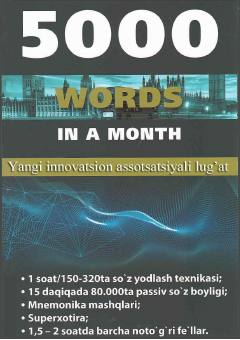

1OIngliz tili lug'at boyligini bir oyda 5000 tagacha oshirish uchun innovatsion qo'llanma.
Ushbu kitob ingliz tili lug'at boyligini tezkor oshirish usullari haqida ma'lumot beradi. Muallif Ayubxon A'zamov tomonidan ishlab chiqilgan texnika yordamida bir oyda 5000 ta so'zni yodlash va xotirani rivojlantirish yo'llari ko'rsatilgan.